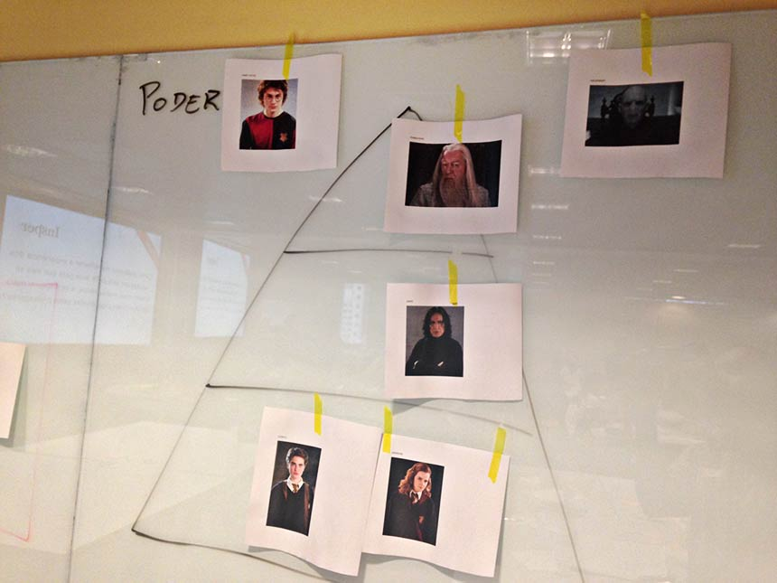

Workshop de Professores da Graduação – Insper
DEA - desenvolvimento de Ensino e Aprendizagem
29/11/2016, das 9h às 12h30
O workshop de hoje foi incrível! Talvez um dos melhores que tive a oportunidade de estar presente... Valeu!!!! Literalmente eu sai da caixinha para entrar nessa atividade... E FOI MUUUITO BOM! detalhe: já saí com ideias para implementar, no próximo semestre, numa das disciplinas que ministro, algumas das ações discutidas ao longo das apresentações das equipes!!! Um parabéns/obrigado especial ao Victor, que comandou tudo de maneira nota dez!
Participante do Workshop
Foi muito legal participar deste workshop! Com certeza aprendemos não apenas um pouco mais de como motivar os alunos, mas também em como criar uma aula totalmente interativa. Trazer os alunos do colegial para serem entrevistados foi uma excelente ideia. Parabéns pela iniciativa! Orgulho de ser Insper!
Participante do Workshop
Como podemos melhorar a experiência dos alunos em sala de aula para que eles se sintam mais motivados e se engajem mais nas atividades propostas pelos professores?
Este foi o desafio que guiou o workshop de professores da Graduação do Insper, realizado na manhã do dia 29 de novembro de 2016.
O tema do workshop foi indicado pelo DEA e validado com alguns professores membros do Núcleo Docente Estruturante (NDE) dos cursos de ADM/ECO. A dinâmica foi desenhada em parceria entre DEA, professores convidados e Victor Macul, que também realizou a facilitação geral. Além disso, alguns professores do curso de Engenharia participaram do workshop como facilitadores específicos de grupo.
O workshop contou com 34 participantes, divididos em sete grupos. Na oportunidade, cada grupo cocriou soluções para o desafio, seguindo as principais etapas do Design Thinking:
Como o design Thinking pressupõe cocriação das soluções junto ao usuário-foco, alunos de Ensino Médio da escola See Saw Panamby participaram nas etapas de entrevistas e validação dos protótipos. Além disso, aproveitaram a presença para conhecer o Insper.
Cumpridas as etapas, cada grupo cocriou uma solução para o problema em questão:
- Escola com três ambientes: presencial, digital e de autoensino
- Usar situações reais para abordagem interdisciplinar
- Pequenos grupos, diversas etapas na aula
- Ensinando Sociologia por meio do Harry Potter
- Novas maneiras de trocar feedbacks no trabalho em equipe
- Em vez de sala e professor, múltiplos ambientes e moderador
- Fabricando sonhos
Ao final, os participantes deram feedback sobre o workshop, visando aprimoramento contínuo das iniciativas de desenvolvimento docente oferecidas pelo DEA.
Resumo das soluções cocriadas pelos grupos
Grupo 1 - Escola com três ambientes: presencial, digital e de autoensino
1º formação
- Adalto Gonçalves
- André Duarte
- Guilherme Fowler
- Ricardo Brito
- Rodrigo Arruda
2º formação
- Adalto Gonçalves
- André Duarte
- Marcelo Santos
- Ricardo Brito
- Sandro Cabral
Facilitador: Daniel Guzzo
Como alunos possuem diferentes maneiras de construir conhecimentos, escola seria dividida em três núcleos:
- Ambiente Presencial, similar ao ambiente atual, onde alunos vão interagir entre si.
- Ambiente Digital, onde os alunos vão ver materiais de estudo, como vídeos e recursos tecnológicos.
- Ambiente de Autoensino, onde os alunos vão criar. Como aprendemos mais quando ensinamos outras pessoas, os próprios alunos constroem objetos de aprendizagem para explicar conceitos aos colegas. Os recursos produzidos são agregados à base Digital da escola.
Quão flexível é o sistema? Os alunos devem cumprir uma determinada dedicação esperada, dividindo-a dentre os três ambientes. O ambiente mais alinhado ao seu perfil pode ser o mais utilizado.
Como é a avaliação? A avaliação é continuada. Em vez de provas periódicas, os alunos são frequentemente avaliados nos três ambientes.
Qual o desafio? Se alunos podem escolher ambientes que mais lhe agradam, como tirá-los da zona de conforto, para que desenvolvam outras competências?
Grupo 2 - Usar situações reais para abordagem interdisciplinar
1º formação
- Ana Helena Campos
- Fabio Hage
- Gib de Medeiros
- Giuliana Isabella
2º formação
- Gib de Medeiros
- Giuliana Isabella
- Guilherme Fowler
- Rodrigo Arruda
Facilitador: Marcelo Hashimoto
Usar situações reais para abordar as temáticas escolares, em um mesmo ambiente interdisciplinar que junte diferentes períodos escolares.
Exemplo: quando um avião com equipe de futebol cai, você pode analisar duas matérias:
- Geografia: quais as características geográficas da região onde o avião caiu?
- Física: quais características físicas podem ter levado o avião à queda?

A ideia de criar um ambiente misto é gerar:
- Colaboração entre alunos, como um ambiente “familiar” de troca de experiências, inclusive com alunos mais velhos tutorando os mais novos.
- Temas de interesse, que podem gerar mais prazer no aprendizado.
Grupo 3 - Pequenos grupos, diversas etapas na aula
1º formação
- Andrea Minardi
- José Heleno Faro
- Regina Madalozzo
- Tatiana Iwai
- Renan Pieri
2º formação
- Ana Helena Campos
- Fabio Hage
- José Heleno Faro
- Tatiana Iwai
- Renan Pieri
Facilitador: Juliana Massi

Ambiente com menos alunos é mais propício para empatia e interação entre alunos e professores.
Assim, aula motivadora teria menos alunos, com as seguintes etapas
- Discussão coletiva - mapeamento do problema: alunos dispostos em roda/círculo, com professor na mesma posição que alunos. Professor traz problema e escuta o que alunos têm a dizer, quais são seus conhecimentos, experiências prévias e interesses.
- Lecture - exposição de conceitos: disposição tradicional de sala de aula, com professor à frente. Professor expõe os conceitos importantes para entender o tema e resolver o problema. Alunos prestam atenção e tiram dúvidas.
- Trabalho em pequenos grupos - elaboração de soluções: alunos trabalham em pequenos grupos. Professor circula para atender às dúvidas.
- Discussão coletiva - validação de soluções: Alunos expõem soluções para os colegas. Professor relaciona as soluções com os conceitos aprendidos na etapa anterior.
- Produção individual - avaliação do aprendizado: cada aluno produz algo concreto, individualmente. Professor avalia as produções e mensura o aprendizado.

Grupo 4 - Ensinando Sociologia por meio de Harry Potter
1º formação
- Adriana Bruscato
- Débora Mallet
- Marcelo Sousa
- Maria Cristina Gramani
- Sérgio Martins
2º formação
- Andrea Minardi
- Débora Mallet
- Marcelo Sousa
- Regina Madalozzo
- Sérgio Martins
Facilitador: Vinícius Barqueiro
O grupo partiu do perfil de um aluno que gosta muito de ler ficção, mas que não gosta das aulas de Sociologia, pois tem muita carga de leitura teórica. Assim, pensaram: que tal estudar questões sociais com base em uma sociedade utópica?
Exemplo: a sociedade de Harry Potter pode ser analisada com base em diversas estruturas: afinidades, poder, poder aquisitivo, relações de trabalho etc.
Além do gosto por ficção, outras preferências do aluno levadas em conta:
- Aluno aprende fazendo comparações
- Aluno precisa de foco
- Aluno gosta de contextualização com a contemporaneidade
O aluno gostou, segundo ele, porque o novo conhecimento foi construído com base em um conhecimento existente, já consolidado.
Grupo 5 - Novas maneiras de trocar feedbacks no trabalho em equipe
1º formação
- Carla Ramos
- Guilherme Martins
- Luciana Ferreira
- Marcos Lara
- Natália Dias
- Roberto Calfat
2º formação
- Adriana Bruscato
- Guilherme Martins
- Luciana Ferreira
- Marcos Lara
- Maria Cristina Gramani
- Natália Dias
Facilitador: Victor Macul e Leônidas Sandoval
Os alunos gostam de trabalhar em grupo, mas possuem situações de conflito, principalmente na troca de feedbacks. Também preferem escolher os colegas com quem vão trabalhar. No entanto, é importante que aprendam a trabalhar com pessoas diferentes, de modo similar ao mercado de trabalho.
Nesse sentido, grupo proporia trabalhos em equipe, incluindo atividades estruturadas para trocas de feedback entre os pares.
Propuseram três diferentes formas de avaliação de pares no trabalho em equipe:
- Formulário Zoológico/Filme: aluno escolhe zoológico ou filme de super heróis. Em seguida, escolhe um animal/herói que lhe representa e explica a escolha. depois, escolhe um animal/super-herói para cada colega e explica a escolha. Ao final, diz o que faria para mudar seu zoológico/filme?
- Formulário “Big Brother”: Aluno decide: Quem você vai mandar para o paredão e por quê? Quem é o líder? Quem é o anjo? Se houvesse um grupo de eliminados, quem faria parte e por quê?
- Formulário quantitativo: Em uma escala de 1 a 5, como você avalia sua contribuição para o trabalho do grupo? Nessa escala, como você avalia a contribuição do colega tal? Como foi a interação do colega tal com o grupo? Qual o grau de comprometimento do colega tal com o trabalho? Se pudesse escolher, você trabalharia novamente com o colega tal?
Qual instrumento os alunos preferem? Na discussão dentro do grupo, os alunos entrevistados escolheram o formulário quantitativo. Na apresentação geral, a maioria dos alunos preferiu o zoológico/filme.
Grupo 6 - Em vez de sala e professor, múltiplos ambientes e moderador
1º formação
- Daniel Krass
- Heleno Vieira
- Marcelo Santos
- Marco Lyrio
- Sandro Cabral
2º formação
- Carla Ramos
- Daniel Krass
- Heleno Vieira
- Marco Lyrio
- Roberto Calfat
Facilitador: Bárbara Suzuki
Por meio das entrevistas, o grupo concluiu que alunos preferem modelo de disciplinas eletivas, com debates coletivos, projetos e possibilidade de expressar-se como preferir, a partir de suas escolhas.
A partir disso, foram além do desafio inicial:
“Como podemos melhorar a experiência dos alunos (A) [em sala de aula] para que eles se sintam mais motivados e se engajem mais nas atividades propostas pelos (B) [professores]?”
Com esse pano de fundo do debate, o grupo propôs uma nova dinâmica de ensino e aprendizagem:
- Em vez de sala de aula, múltiplos ambientes para maior engajamento e motivação, incluindo ambiente.
- Em vez de professor, moderador que faz a mediação das trocas de experiências.
Nesse ambiente colaborativo, pautado no debate, os próprios alunos trazem seus interesses e professor faz a mediação das discussões.
Grupo 7 - Fabricando Sonhos
1º formação
- Angélica Turaça
- Maria Kelly
- Daniel Kras
- Paulo Bufacchi
2º formação
- Angélica Turaça
- Maria Kelly
- Paulo Bufacchi
Facilitador: Alex Bottene
Como saídas da escola e projetos sociais motivam os alunos, grupo pensou em uma disciplina que atendesse a esses aspectos, na qual os alunos conhecessem o mundo real e trouxessem resultados concretos.
A disciplina se chamaria “Fabricando Sonhos” e integraria vários professores que fariam a mediação dos alunos em torno de um tema central.
A disciplina estaria dividida em cinco etapas:
- Criando: alunos pensam em ideias para melhorar a sociedade.
- Colaborando: alunos são agrupados por ideias afins.
- Captando: alunos vão às comunidades para pesquisar as características das pessoas, dos ambientes, validando as ideias iniciais e descobrindo possibilidades de construção de soluções.
- Fabricando: alunos fazem construção das soluções em espaço de fabricação. Essas atividades “mão na massa” deixariam as tardes menos cansativas.
- Realizando: alunos executam soluções. Ver trabalho reconhecido dá mais motivação. Avaliação é a própria construção e entrega das soluções.
Feedback dos Participantes
Ao final do workshop, os professores declararam em post-its o que gostaram, não gostaram e gostariam em relação ao encontro.
A tabulação dos resultados aponta o seguinte:
detalhes
Professores Participantes
Foram abertas 40 vagas para o workshop. As vagas foram limitadas para favorecer a dinâmica colaborativa.
dentre 118 convidados, 40 se inscreveram e confirmaram presença, dentre os quais 34 vieram ao workshop:
| Professores Participantes | |
| Adalto Barbaceia Gonçalves/td> | Adm/Eco |
| Adriana Bruscato Bortoluzzo/td> | Adm/Eco |
| Ana Helena de Campos | Adm/Eco |
| André Luis de Castro Moura Duarte/td> | Adm/Eco |
| Andrea Maria Accioly Fonseca Minardi | Adm/Eco |
| Angelica Turaça | Engs |
| Carla Sofia Dias Moreira Ramos | Adm/Eco |
| Daniel Kras Borges Da Silveira | Engs |
| debora Mallet Pezarim de Angelo | DEA |
| Fábio Sismotto El Hage | Engs |
| Gib de Medeiros | Engs |
| Giuliana Isabella | Adm/Eco |
| Guilherme Fowler de Ávila Monteiro | Adm/Eco |
| Guilherme Silveira Martins | Adm/Eco |
| Heleno Piazentini Vieira | Adm/Eco |
| Israel Ferreira Alves | Adm/Eco |
| José Heleno Faro | Adm/Eco |
| Luciana Carvalho de Mesquita Ferreira | Adm/Eco |
| Marcelo Rodrigues Dos Santos | Adm/Eco |
| Marcelo Victor Pires de Sousa | Engs |
| Marco Túlio Pereira Lyrio | Adm/Eco |
| Marcos Rodrigues de Lara | Adm/Eco |
| Maria Cristina Nogueira Gramani | Adm/Eco |
| Maria Kelly Venezuela | Adm/Eco, Engs |
| Natalia Rebelo Dias | DEA |
| Paulo Bufacchi | Engs |
| Regina Carla Madalozzo | Adm/Eco |
| Renan Gomes Di Pieri | Adm/Eco |
| Ricardo Dias de Oliveira Brito | Adm/Eco |
| Roberto Anis Calfat | Adm/Eco |
| Rodrigo Patrício de Arruda | Engs |
| Sandro Cabral | Adm/Eco |
| Sérgio Ricardo Martins | Adm/Eco |
| Tatiana Iwai | Adm/Eco |
Facilitadores
O workshop foi cocriado pelo DEA em parceria com Victor Macul, que também realizou a facilitação geral. Além disso, cada grupo contou com um facilitador específico: colaboradores do DEA (com formação em Design Thinking) e professores dos cursos de Engenharia que já trabalham na escola usando o Design Thinking. A equipe de facilitadores também trabalhou na condução dos alunos e na produção dos registros audiovisuais.
| Facilitadores | |
| Alex Camilli Bottene | Engs |
| Barbara Dariano Silva Suzuki | Engs |
| Daniel Guzzo | Engs |
| Gabriel Mendes Santana | DEA |
| Juliana Machado Massi | DEA |
| Leonidas Sandoval Junior | Adm/Eco, Engs |
| Marcelo Hashimoto | Engs |
| Rodrigo Florenciano da Silva | Engs |
| Silvia Fernanda Correa | DEA |
| Victor Macul | Engs |
| Vinícius Cassio Barqueiro | DEA |
Alunos Participantes

Oito alunos de Ensino Médio participaram do workshop: Fernando Castello Branco, Gabriela Danielides, Giulia Ré, Leonardo Amaral, Maria Victoria Cincurá, Milagros Bugallo, Ricardo Reis, Stella Stanzione. Todos estudam na Escola Bilíngue See Saw Panamby e vieram acompanhados da diretora pedagógica Lia Armelin.
Além de participarem do workshop, os alunos fizeram uma visita guiada às instalações do Insper e conversaram com alunos e professores.
Midiateca
- Apresentação de slides com síntese do que é design Thinking (por Victor Macul)
- Fotos e vídeos do encontro (por Rodrigo Florenciano)
- Templates usados pelos participantes (The d.School)
- Templates usados pelos facilitadores (The d.School)
Próximos Passos
E aí? Gostou das soluções propostas?
Se você quiser implementá-las, ou mesmo testar coisas novas na sala de aula, conte com a nossa ajuda.
Estamos à disposição para auxiliá-lo no planejamento pedagógico, na condução das dinâmicas e na avaliação/feedback do aprendizado.
Entre em contato conosco: dea@insper.edu.br